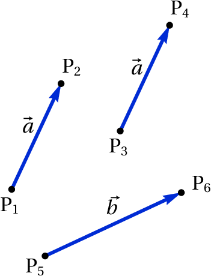
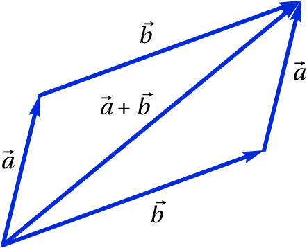
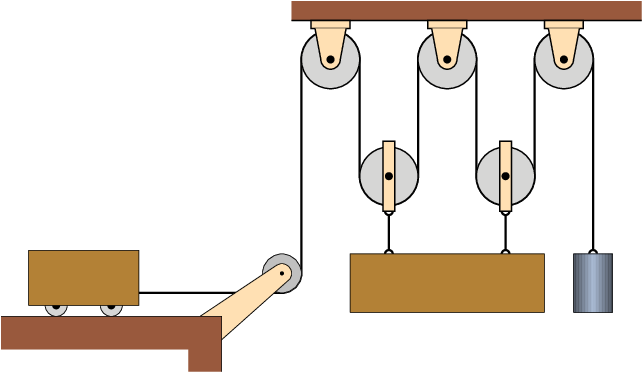

Quando um objeto se desloca no espaço sem seguir uma trajetória
determinada, a sua posição já não pode ser definida com uma única
variável como nos exemplos estudados no capítulo anterior. No século
XVII, o matemático Gottfried Leibniz escreveu que
seria desejável criar uma área da matemática que descrevesse a posição
diretamente, assim como na álgebra usam-se variáveis para representar
valores numéricos. Na mesma época, Isaac
Newton enunciou a lei do paralelogramo para
somar forças. No entanto, o conceito de vetor usado hoje em dia, que
permite concretizar o sonho de Leibnitz, só foi inventado muitos anos
depois, no século XIX.
2.1 Projeção do movimento num eixo
Quando a trajetória de um ponto num objeto em movimento não é
conhecida previamente, para determinar a posição do ponto em cada
instante de tempo
serão necessárias duas variáveis, se o ponto
estiver confinado a mover-se numa superfície, ou três variáveis, no caso
geral.
Uma forma conveniente de indicar a posição é usando coordenadas
cartesianas (
,
,
). Os valores dessas coordenadas deverão
ser funções contínuas do tempo,
,
e
. O movimento
do ponto no espaço pode então ser dividido em três movimentos
retilíneos: os movimentos das projeções do ponto em cada um dos eixos
cartesianos. Em cada um desses 3 movimentos podem ser aplicadas as
equações cinemáticas estudadas no capítulo anterior. As velocidades
instantâneas desses 3 movimentos são as derivadas das funções
,
e
, em ordem ao tempo:
(2.1)
Observe-se que se uma ou duas dessas velocidades forem nulas num
instante, isso não implica que a velocidade
seja nula, pois a
terceira velocidade pode ter valor diferente de zero.
As acelerações instantâneas associadas a esses 3 movimentos são as
derivadas das respetivas velocidades, em ordem ao tempo:
(2.2)
Já não é preciso dizer que são acelerações tangenciais, porque em cada
um desses três movimentos não pode existir componente perpendicular da
aceleração, por serem movimentos ao longo duma reta. O tempo pode ser
eliminado entre as equações 2.1 e as respetivas equações
2.2, obtendo-se as equações que relacionam as acelerações
com as velocidades e as posições:
(2.3)
Quando o movimento do ponto está restringido a um plano, os eixos
e
podem ser escolhidos nesse plano, facilitando o estudo, porque
as equações para
e
deixam de ser necessárias. E se o
movimento do ponto estiver restringido a uma reta, essa reta pode ser
usada como eixo dos
, sendo apenas necessárias as equações que
relacionam
,
,
e
.
Em geral, as 9 equações diferenciais 2.1, 2.2 e
2.3 poderão ter de ser resolvidas em simultâneo, porque o
movimento da projeção num dos eixos pode depender dos movimentos das
outras duas projeções. Nos casos em que não exista essa dependência,
as equações para o movimento da projeção em cada eixo podem ser
resolvidas independentemente.
2.2 Aceleração da gravidade
No seu livro de 1638, "Diálogos Acerca de Duas Novas Ciências",
Galileu Galilei explicou, pela primeira vez, que o movimento de um
projétil no ar pode ser decomposto na sobreposição de dois movimentos:
o movimento da projeção do projétil num eixo horizontal e o movimento
da sua projeção num eixo vertical. A figura 1.10 é igual à figura 108
no livro de Galileu e representa um objeto que foi lançado numa
plataforma horizontal, abandonando a plataforma no ponto b.
Figura 2.1: Trajetória de um projétil, tal como foi explicada por
Galileu.
Galileu também descobriu que, quando a resistência do ar pode ser
desprezada, por exemplo, se o projétil tem forma compacta e a sua
trajetória não é muito comprida, o movimento da projeção horizontal é
retilíneo e uniforme. Ou seja, em intervalos de tempo iguais, os
deslocamentos horizontais do objeto são
,
,
,
, etc, todos com o mesmo comprimento. Na
direção vertical, as distâncias que o objeto cai durante esses
intervalos de tempo aumentam quadraticamente; isto é, durante o
primeiro intervalo de tempo a distância descida é
, durante o segundo intervalo já tem descido
uma distância total
, que é quatro vezes maior
que
e durante o terceiro intervalo a
distância total descida é
, nove vezes maior
do que
.
A componente vertical da velocidade aumenta, mas como os deslocamentos
verticais nos intervalos de tempo iguais,
,
,
e
, estão na proporção 1, 3, 5 e 7, então a
componente vertical da aceleração (aumento da componente vertical da
velocidade) é constante. Galileu também observou que essa aceleração é
igual para todos os objetos, independentemente do seu tamanho ou da
sua massa, e é a aceleração da gravidade, representada pela letra
.
O valor da aceleração da gravidade é ligeiramente diferente em
diferentes locais na superfície da Terra, mas é aproximadamente igual a
9.8 m/s2. A resistência do ar produz outra aceleração que contraria
o movimento, mas quando essa resistência for desprezável, admite-se que o
valor da aceleração é constante e igual a
.
Se o eixo dos
for definido na vertical e apontando para cima,
então as componentes da aceleração são
m/s2 e
. O movimento da projeção horizontal é uniforme e o movimento
da projeção horizontal é uniformemente acelerado. Usando as equações
dos movimentos uniforme e uniformemente acelerados estudadas no
capítulo anterior, obtêm-se as seguintes equações:
(2.4)
(2.5)
(2.6)
(2.7)
Onde
e
são as projeções horizontal e vertical da
velocidade inicial
. Por exemplo, se um projétil for lançado com
uma velocidade inicial
, inclinada um ângulo
por cima da
horizontal, então
e
.
Do ponto de vista da trajetória parabólica do objeto, a aceleração
tangencial
produzida pela gravidade pode ser positiva,
negativa ou nula, já que pode fazer aumentar ou diminuir a velocidade
do objeto, e pode ter um valor menor que
se a trajetória não for
vertical, mas existirá também outra aceleração, a aceleração normal ou
centrípeta; a soma das componentes verticais dessas duas acelerações
deverá ser sempre igual a
e a soma das componentes horizontais
igual a zero.
Exemplo 2.1
Atira-se uma pedra desde uma ponte que está 5 m acima de um rio, com
velocidade de 15 m/s e dirigida 36.9° para cima da horizontal.
Determine a velocidade que terá a pedra quando entrar na superfície do
rio e a altura máxima da sua trajetória, medida desde a superfície do
rio (admita que a resistência do ar pode ser desprezada).
Resolução. A componente horizontal da velocidade inicial é
m/s e a componente vertical é
m/s. é conveniente escolher o eixo dos
na horizontal, seguindo a direção da projeção horizontal da
velocidade, e o eixo dos
na vertical e apontando para cima. A
origem pode ser escolhida no ponto onde a pedra foi lançada, mas neste
caso vamos escolhê-la diretamente por baixo desse ponto e sobre a
superfície do rio. Nesse sistema de coordenadas, a posição inicial é
e
(unidades SI), as componentes da velocidade são
,
e as componentes da aceleração são
,
.
Os dois movimentos ao longo dos dois eixos podem ser analisados
independentemente. Como o movimento ao longo do eixo dos
é
uniformemente acelerado, podem usar-se as equações 2.4,
2.5, 2.6 e 2.7. No entanto, mostraremos
como resolver o problema usando o método de separação de variáveis,
que é mais geral.
O valor constante de
pode substituir-se na segunda
equação 2.2 e na segunda equação 2.3, obtendo-se
duas equações diferenciais ordinárias de primeira ordem:
Para obter a velocidade da pedra quando entra na água, é necessário
resolver a segunda equação, que pode ser feito separando as variáveis
e
aos dois lados da equação
A seguir, integra-se o lado esquerdo da equação, desde a altura
inicial
, até à altura final
e o lado direito integra-se
desde a velocidade inicial
até o seu valor final,
, ainda
desconhecido
Calculam-se estes dois integrais (no Maxima usa-se integrate
(9.8, y, 5, 0) e integrate
(vy, vy, 9, vf)) e o resultado é
(a segunda solução,
, corresponde à velocidade que a
pedra teria se tivesse sido lançada para cima desde o rio, passando
pela ponte com componente vertical da velocidade igual a 9 m/s e para
cima).
Assim sendo, a componente vertical da velocidade quando a pedra entra
no rio é
m/s. Como o movimento na horizontal é
uniforme, a componente horizontal da velocidade é sempre igual ao seu
valor inicial 12.0 m/s e a velocidade com que a pedra entra no rio é
No ponto da trajetória onde a altura é máxima, a componente vertical
da velocidade é nula, porque a pedra pára de subir e começa a
descer. Os mesmos dois integrais já calculados podem ser calculados
novamente, mas mudando o ponto final do integral do ponto onde a pedra
entra no rio, para o ponto onde está na sua altura máxima, com valor
de
ainda desconhecido, mas com componente vertical da velocidade
nula
onde
é a altura máxima. Resolvem-se esses integrais e
obtém-se assim o valor da altura máxima
2.3. Vetores
Uma grandeza que tem sempre o mesmo valor, quando é medida por
diferentes observadores em diferentes referenciais, chama-se
escalar. Algumas das grandezas usadas no
capítulo anterior são escalares; por exemplo, o deslocamento
e o intervalo de tempo
.

Figura 2.2: Vetores livres.
Alguns exemplos de grandezas físicas que não são escalares são as
componentes da posição, velocidade e aceleração ao longo de um eixo.
Alterando a direção, o sentido ou a origem desse eixo, os valores
dessas grandezas também se alteram.
É útil escrever as equações da física de forma a que sejam iguais em
qualquer referencial e os vetores permitem atingir esse
objetivo. Um exemplo típico de vetor é o vetor deslocamento, que é um
segmento de reta orientado entre dois pontos P1 e P2 no
espaço, em que o primeiro ponto é considerado a origem do segmento e o
outro ponto o fim.
Por exemplo, na figura 2.2 está representado o vector com
origem num ponto P1 e fim num ponto P2; a seta indica qual é
o ponto final e por cima da letra usada para representar o vetor
coloca-se também uma seta,
, para que fique claro que se
trata de um vetor e não de uma variável algébrica comum.
2.3.1. Propriedades dos vetores
A distância entre o ponto inicial e final de um vetor deslocamento
chama-se módulo, ou
norma. Se um vetor é representado por
,
então neste livro o módulo desse vetor representa-se por
(a mesma
letra mas sem seta). Como a distância entre dois pontos é um escalar,
o módulo de um vetor é uma grandeza escalar. Um vetor é caraterizado
pelo seu módulo, pela sua direção, que é a orientação da reta
que passa pelos dois pontos, e pelo seu sentido, que indica
qual o ponto inicial e qual o ponto final nessa reta.
Dois vetores são iguais se, e só se, a suas direções, sentidos e
módulos são iguais. Por exemplo, na figura 2.2 o vetor entre
os pontos P1 e P2 e o vetor entre os pontos P3 e
P4 consideram-se iguais e, por isso, foram identificados com a
mesma letra,
. A distância entre P3 e P4 é igual à
distância entre P1 e P2 e as retas que passam por esses dois
pares de pontos são paralelas. O vetor
, entre os pontos
P5 e P6, não é igual a
por ter módulo e direção
diferentes. Este tipo de vetores chamam-se vetores
livres porque não interessam os pontos específicos
onde estejam colocados, sempre que esses pontos definam corretamente o
módulo, direção e sentido do vetor.
Figura 2.3: Soma de vetores.
Na figura 2.3, partindo do ponto P o vetor
produz
um deslocamento até o ponto Q; a seguir, o vetor
provocará
um deslocamento até o ponto R; assim sendo, o deslocamento combinado
de
e
é equivalente ao deslocamento desde P até R,
representado na figura pelo vetor
. Diz-se que
é
igual à soma dos vetores
e
(2.8)
Ou seja, a adição de dois vetores consiste em deslocar um deles de
forma a fazer coincidir o seu ponto inicial com o ponto final do
primeiro, obtendo-se como resultado o vetor que vai desde o ponto
inicial do primeiro vetor até o ponto final do segundo.
A equação
implica que
e a figura 2.3 mostra que o vetor
vai
desde o ponto final de
até o ponto final de
,
quando os pontos iniciais de
e
coincidem. Como
tal, para subtrair dois vetores deslocam-se para um ponto inicial
comum e o resultado da subtração é o vetor que vai desde o ponto final
do segundo vetor, até o ponto final do primeiro vetor.
A adição de vetores é comutativa: deslocar o vetor
a
continuação do vetor
produz o mesmo resultado do que
deslocar o vetor
a continuação do vetor
(figura 2.4). A soma dos vetores
e
é a
diagonal do paralelogramo em que dois
dos lados são iguais a
e os outros dois lados são iguais a
. A soma de vários vetores também verifica a propriedade
associativa.

Figura 2.4: Regra do paralelogramo para somar vetores.
Seguindo as regras para soma e subtração de vetores, a soma de um
vetor com si próprio,
, é um vetor com a mesma
direção e o mesmo sentido, mas com módulo duas vezes maior e a
subtração de um vetor a si próprio,
, produz um vetor
nulo (o mesmo ponto inicial e final). Generalizando esses resultados,
define-se o produto de um escalar
e um vetor
, igual a
outro vetor com a mesma direção de
mas com módulo igual a
. O sentido de
é o mesmo de
, se
for
positivo, ou oposto se
for negativo. Costuma escrever-se primeiro
o escalar e a seguir o vetor, mas o produto entre escalar e vetor é
comutativo. Se
for igual a zero,
é o vetor nulo,
.
Qualquer vetor
é igual ao produto
, em que
é um vetor de módulo unitário, com a mesma direção e sentido
de
(figura 2.5). Esse vetor unitário, com a mesma
direção e sentido de
, chama-se versor
de
. Neste livro usa-se um acento circunflexo para indicar
versores.
Figura 2.5: Versor
associado ao vetor
.
Considere-se um sistema de coordenadas
cartesianas, como na figura
figura 2.6. Cada ponto P tem 3 coordenadas cartesianas (
,
,
) e está no vértice de um paralelepípedo com arestas
,
e
, fases paralelas aos três planos
,
e
e o vértice
oposto a P encontra-se na origem O do referencial.
Figura 2.6: Coordenadas cartesianas de um ponto P e versores cartesianos.
Existem duas formas diferentes de definir os sentidos positivos dos
três eixos
,
e
. A forma habitual consiste em seguir a
regra da
mão direita: fecha-se o
punho direito, esticam-se os dedos maior, indicador e polegar, de
forma a formarem ângulos retos entre si; o indicador apontará no
sentido do eixo dos
, o dedo maior no sentido do eixo dos
e o
polegar no sentido do eixo dos
. Um referencial cartesiano pode ser
definido indicando o ponto O que define a origem e 3 versores
perpendiculares,
,
e
, que definem as direções e
sentidos dos 3 eixos.
Qualquer vetor pode ser obtido somando 3 deslocamentos ao longo dos 3
eixos; por exemplo,
(2.9)
em que (
,
,
) e (
,
,
) são as
componentes cartesianas dos
vetores. Usando as propriedades da soma vetorial e do produto de
escalar por vetor, a soma dos dois vetores
e
pode
ser obtida somando as respetivas componentes:
(2.10)
Ou seja, a soma de dois vetores é outro vetor com componentes iguais à
soma das componentes dos vetores originais. Observe que a direção, o
sentido e o módulo de um vetor
são independentes do sistema
de eixos usado e da escolha da origem O; no entanto, as suas
componentes (
,
,
) são diferentes em diferentes
sistemas de eixos. Se dois vetores são iguais, as suas componentes, no
mesmo sistema de eixos, também devem ser iguais.
O vetor posição de um ponto P,
com coordenadas (
,
,
), é o vetor
que vai desde a
origem O até o ponto P e pode ser obtido somando 3 deslocamentos ao
longo dos 3 eixos (ver figura 2.6):
(2.11)
Observe-se que as componentes desse vetor posição são iguais as
coordenadas cartesianas do ponto P, (
,
,
). O vetor posição
do ponto P depende da origem do sistema; ou seja, em dois sistemas com
origens diferentes os vetores posição do ponto P são diferentes. Em
dois sistemas diferentes mas com a mesma origem, o vetor posição de P
é o mesmo, mas as suas componentes são diferentes nos dois
sistemas.
2.3.2. Velocidade e aceleração vetoriais
A trajetória de um ponto em movimento pode ser definida em cada
instante
através do vetor posição do ponto,
(2.12)
Cada uma das três componentes,
,
e
, é uma função
do tempo. Num intervalo de tempo
o
deslocamento do ponto (ver figura 2.7) é igual a
(2.13)
em que
e
são os vetores posição nos instantes
e
.
Figura 2.7: Trajetória de um ponto e deslocamento
entre dois instantes
e
.
O vetor obtido dividindo o deslocamento
por
é o vetor velocidade média, com a mesma direção e sentido
do deslocamento
. Define-se o
vetor velocidade em cada instante,
igual ao deslocamento dividido por
, no
limite em que
se aproxima de zero,
(2.14)
Como as componentes cartesianas do deslocamento vetorial
são
,
e
, então o
vetor velocidade é igual a
(2.15)
As equações obtidas aplicando aequação 1.8 às três componentes do vetor posição combinam-se numa única equação vetorial:
(2.16)
O aumento do vetor velocidade,
, durante o intervalo
de tempo
, dividido por esse intervalo, define o
vetor aceleração,
(2.17)
e as suas componentes são as derivadas das componentes da velocidade:
(2.18)
As equações obtidas aplicando a equação 1.22 às três
componentes do vetor velocidade combinam-se também numa única equação
vetorial:
(2.19)
As equações 2.15 e 2.18 são as mesmas 6 equações
2.1 e 2.2, combinadas em duas equações vetoriais,
usando o facto que a igualdade de dois vetores implica a igualdade das
suas componentes.
As restantes 3 equações 2.3 também podem ser combinadas numa
equação vetorial:
, onde o ponto "
" representa
o produto escalar, que será introduzido no fim do capítulo. No
entanto, para resolver equações diferenciais usando o método de
separação de variáveis usado no capítulo anterior, é mais útil usar as
3 equações 2.3 por separado.
A rapidez
referida no capítulo anterior é o módulo do vetor
. Quando o movimento pode ser em qualquer direção do espaço,
chamaremos simplesmente velocidade ao vetor
e "valor da
velocidade" a
; de forma análoga, o vetor
chamar-se-á
simplesmente aceleração e
será o valor da aceleração.
Exemplo 2.2
A velocidade de uma partícula em função do tempo
é dada pela
expressão (unidades SI):
A partícula passa pela posição (
) no
instante
. Encontre o vetor posição, a velocidade e a aceleração
no instante
s e quando
tende para infinito. Trace o gráfico
da trajetória da partícula durante os primeiros 60 segundos do
movimento.
Resolução. As componentes da velocidade podem ser representadas
por uma lista no Maxima:
(%i1)v: [5-t^2*exp(-t/5), 3-exp(-t/12)];
(%o1)
As funções diff e integrate aceitam também uma lista com
expressões, derivando (ou integrando) cada um dos elementos da lista.
Assim sendo, a aceleração (derivada da velocidade em ordem ao tempo)
é,
(%i2)a: diff (v, t);
(%o2)
As componentes do vetor obtêm-se a partir da equação 2.16.
usou-se o comando assume para indicar que
é positiva; se
não tivesse sido usado, Maxima teria perguntado o sinal de
, já que
o resultado do integral depende desse sinal.
O vetor posição, a velocidade e a aceleração aos 15 segundos são,
Ou seja, a partícula atinge velocidade constante
, afastando-se até infinito.
Para traçar o gráfico da trajetória, usa-se a opção parametric
da função plot2d. As componentes
e
do vetor posição
devem ser dadas por separado, porque a função plot2d não admite
que sejam dadas numa lista. O primeiro elemento da lista r
(componente
) identifica-se usando a sintaxe r [1] e o segundo elemento (componente
)
com r[2]
O intervalo de tempo desde 0 até 60 foi indicado usando a notação
[t, 0, 60]. O
resultado mostra-se na figura 2.7.
Figura 2.8: Trajetória da partícula durante os 60 segundos após ter
passado pelo ponto (5, 2).
2.3.3. Lançamento de projéteis
O movimento de projéteis sob a ação da gravidade, estudado na
secção \ref{sec-2.2}, pode também ser analisado de forma vetorial.
Escolhendo o eixo dos
na direção vertical, com sentido positivo
para cima, tal como na secção \ref{sec-2.2}, o vetor aceleração será:
(2.20)
onde a aceleração da gravidade
é, aproximadamente
9.8 m/s2.
Se um projétil for lançado com velocidade
inicial
, a aceleração da gravidade alterará essa
velocidade, na direção vertical, mas a componente horizontal de
permanecerá constante. O resultado será um vetor
velocidade
que se encontra no mesmo plano vertical em que
está a velocidade inicial
. Conclui-se assim que a
trajetória do projétil será sempre plana, no plano vertical definido
por
e
.
A única excepção a essa regra é quando
não tiver
componente horizontal; nesse caso,
e
são
paralelos, não definem nenhum plano e a trajetória é uma reta
vertical.
Exemplo 2.3
Um canhão dispara uma bala, desde o terraço de um edifício, na posição
(unidades SI):
com velocidade inicial (unidades SI):
em que o eixo dos
aponta na direção vertical, para cima, e com
origem no chão. Admitindo que a resistência do ar pode ser desprezada,
calcule a altura máxima atingida pela bala e a posição em que a bala
bate no chão.
Resolução: Usando o sistema de eixos definido no enunciado do
problema, o vetor aceleração é
m/s2. A
expressão do vetor velocidade em função de
instante obtém-se a
partir da equação 2.19 e calculando a primitiva
Onde foi arbitrado
no instante em que a bala é disparada.
Substituindo essa expressão e a posição inicial na
equação 2.16, obtém-se a expressão do vetor posição em
qualquer instante
A altura máxima será atingida no instante em que a velocidade seja na
horizontal, ou seja, quando a componente
da velocidade for nula
nesse instante, a componente
do vetor posição determina a altura
máxima:
Para calcular o instante em que a bala bate no chão, calcula-se o
tempo
em que a componente
da posição é igual a zero,
e nesse instante a posição da bala é,
2.4. Velocidade e aceleração relativas
A figura 2.9 mostra os vetores posição
e
de dois pontos P e Q, no mesmo instante
. O
vetor
, desde o ponto Q até o ponto P, é a
posição do ponto P, relativa a Q. Esses três vetores posição estão
relacionados pela seguinte equação:
(2.21)
Figura 2.9: Vetores posição de dois pontos P e Q e posição de P relativa a Q.
Os vetores velocidade dos dois pontos são as derivadas dos seus
vetores posição, em ordem ao tempo
(2.22)
E a derivada do vetor posição relativa, em ordem ao tempo, é a
velocidade de P relativa a Q:
(2.23)
Como tal, derivando os dois lados da equação 2.21, em ordem
ao tempo, obtém se a relação entre as 3 velocidades:
(2.24)
Isto é, a velocidade do ponto P é igual à sua velocidade relativa a
outro ponto Q, mais a velocidade desse ponto Q. E a velocidade do
ponto P, relativa a outro ponto Q, é igual à velocidade de P menos a
velocidade de Q.
A relação entre as velocidades pode ser derivada novamente, em ordem
ao tempo, obtendo-se uma relação semelhante para a aceleração relativa:
(2.25)
Assim, por exemplo, se viajarmos num comboio que se desloca com
velocidade
e observarmos um objeto com velocidade
, dentro do comboio, a velocidade desse objeto em relação à
Terra será igual a
+
. Mas como a Terra se
desloca em relação ao Sol, a velocidade do objeto em relação ao Sol
seria
, em que
é a velocidade
da Terra relativa ao Sol. Em relação à Galaxia teríamos de somar
também a velocidade do Sol na galaxia e assim sucessivamente.
O princípio de adição de acelerações relativas é aproveitado para
treinar os candidatos a astronautas. Se o astronauta, a bordo de um
avião, tropeça e cai para o chão, a sua aceleração durante a queda, em
relação à Terra, é o vetor
, que aponta para o centro da
Terra e com valor igual à aceleração da gravidade. Se o avião também
estiver em queda livre, a sua aceleração em relação à Terra será o
mesmo vetor
(figura 2.10). A aceleração do
astronauta em relação ao avião é igual à diferença entre essas duas
acelerações em relação à Terra, que é zero. Ou seja, em relação ao
avião, o astronauta não acelera em nenhuma direção, mas flutua no meio
do avião durante os segundos que o piloto conseguir manter o avião em
queda livre.
Figura 2.10: Avião e passageiro em queda livre (aceleração relativa nula).
2.5. Movimentos dependentes
Em alguns sistemas em que aparentemente são necessárias várias
variáveis para descrever o movimento das diferentes componentes do
sistema, o número de graus de liberdade pode ser menor devido à
existência de restrições no movimento. A figura 2.11 mostra
um exemplo; enquanto o cilindro desce, o carrinho desloca-se sobre a mesa.
Figura 2.11: Sistema com dois movimentos dependentes e um único grau de
liberdade.
O movimento do carrinho pode ser descrito pela variação da distância
horizontal
até o eixo da roldana fixa. O movimento do cilindro é
igual ao movimento da roldana móvel e, como tal, pode ser descrito
pela expressão para a distância vertical
entre os centros das
roldanas, em função do tempo.
Mas enquanto o fio permanecer esticado e sem se quebrar, existirá uma
relação entre as velocidades e as acelerações do carrinho e do
cilindro. Para encontrar essa relação, escreve-se a o comprimento do
fio,
, em função das distâncias
e
:
(2.26)
em que
e
são os raios das duas roldanas. O fio toca um
quarto do perímetro da roldana fixa (
) e metade do
perímetro da roldana móvel (
). Tendo em conta que
,
,
e
são constantes, e derivando a equação anterior em ordem
ao tempo, obtém-se,
(2.27)
Ou seja, o valor da velocidade do carrinho será sempre o dobro do
valor da velocidade do cilindro. O sinal negativo na equação acima
indica que se o cilindro desce o carrinho desloca-se para a direita e
vice-versa.
Derivando novamente essa última equação em ordem ao tempo, conclui-se
que a aceleração tangencial do carrinho é também o dobro da aceleração
tangencial do cilindro:
(2.28)
Essas relações entre as posições, velocidades e acelerações implicam
que o sistema tem apenas um grau de liberdade. Uma vez conhecidas as
expressões para a posição, velocidade e aceleração de um dos objetos,
as expressões da posição, velocidade e aceleração do outro objeto
serão obtidas multiplicando (ou dividindo) por 2.
Um segundo exemplo, com dois graus de liberdade, é o sistema de três
roldanas e três cilindros na figura 2.12. As alturas dos
três cilindros são determinadas pelos valores das 3 distâncias
,
e
; como existe um único
fio em movimento, existe apenas uma restrição (comprimento do fio
constante), que permitirá expressar uma das três distâncias em função
das outras duas.
Figura 2.12: Sistema com três movimentos dependentes e dois graus de liberdade.
O comprimento do fio é,
(2.29)
em que a constante é a soma de metade dos perímetros das roldanas, que
não é importante conhecer, já que vai desaparecer quando a equação for
derivada e só altera as posições num valor constante.
A derivada da equação anterior em ordem ao tempo é,
(2.30)
Neste caso existem vários possíveis movimentos; por exemplo, se o
cilindro A estiver a subir e o cilindro C estiver a descer com a mesma
velocidade, o cilindro B permanecerá estático; ou um dos cilindros
poderá estar a descer e os outros dois a subir. O que sim não é
possível é que os 3 cilindros estejam simultaneamente a descer ou a
subir.
A derivada da equação 2.30 conduz à relação entre as
acelerações,
(2.31)
Exemplo 2.4
No sistema da figura, calcule o valor da velocidade com que sobe o
cilindro, quando o anel A for puxado para baixo com velocidade de
valor 2 m/s.
Resolução: Neste caso há 4 sistemas em movimento, as três
roldanas móveis e o anel A (o movimento do cilindro é igual ao da
roldana móvel da qual está pendurado) e 3 fios inextensíveis;
portanto, este sistema tem apenas um grau de liberdade. Com o valor da
velocidade de A dada no enunciado será possível calcular as
velocidades de todas as roldanas móveis.
Sendo
a distância desde o teto até o anel e
,
e
as distâncias desde o teto até cada uma das roldanas móveis, os
comprimentos dos 3 fios são:
Derivando essas três equações, obtém-se:
e substituindo, encontra-se a relação entre
e
,
isto é, o valor da velocidade com que desce o anel é 8 vezes o da
velocidade com que o cilindro sobe. Assim sendo, o cilindro sobe com
velocidade de valor 0.25 m/s.
2.6. Produto escalar
O produto escalar entre dois vetores
e
, indicado por meio de um ponto entre os vetores,
, define-se como o produto entre os módulos dos
dois vetores e o cosseno do ângulo
entre eles:
(2.32)
A figura 2.13 mostra dois vetores
e
e o
ângulo
entre eles. A projeção do vetor
na direção
paralela ao vetor
é igual a
e a projeção do
vetor
na direção paralela ao vetor
é igual a
. Assim sendo, o produto escalar entre os dois vetores
é igual ao produto do módulo de um dos vetores pela projeção do outro
vetor na direção do primeiro.
Figura 2.13: Dois vetores
e
e o ângulo
entre entre
eles.
Este produto denomina-se escalar porque os módulos dos dois vetores e
o ângulo entre as direções são grandezas escalares, que não dependem
do referencial usado para os medir; consequentemente, o produto
é também um escalar, independente do sistema de
eixos usado.
Duas retas que se cruzam num ponto definem dois ângulos
e
(
). No caso de vetores, não existe ambiguidade na
definição do ângulo, porque deslocando os vetores para um vértice
comum, mede-se o ângulo na região por onde passa o vetor
+
(ver figura 2.14).
O produto escalar entre dois vetores com módulos
e
está sempre
no intervalo [
,
]. Se o ângulo entre os vetores é agudo,
, o produto é positivo. Se o ângulo é obtuso,
, o produto é negativo e se os vetores são
perpendiculares,
, o produto é nulo
(figura 2.14). O valor mínimo do produto,
, obtém-se
quando os vetores têm a mesma direção, mas com sentidos opostos. O
valor máximo,
, obtém-se quando os vetores têm a mesma direção e
o mesmo sentido.
Figura 2.14: Vetores que formam ângulos agudo, reto e obtuso.
Como o módulo dos versores é igual a 1, o produto entre dois versores
é sempre igual ao cosseno do ângulo entre eles. Assim sendo, o ângulo
entre duas direções no espaço pode ser determinado calculando o arco
cosseno do produto escalar entre dois versores nessas direções
(2.33)
Em função das componentes cartesianas dos vetores, o produto escalar
é,
(2.34)
Usando a propriedade distributiva do produto escalar e o facto de que
o produto escalar entre dois dos versores cartesianos
,
e
diferentes é zero, por serem
perpendiculares, e o produto de um desses versores consigo próprio é
1, obtém-se uma expressão útil para calcular o produto escalar em
função das componentes cartesianas,
(2.35)
As componentes dos dois vetores são diferentes em diferentes
referenciais, mas o produto (
+
+
)
deve dar o mesmo resultado em qualquer referencial, já que
é um escalar.
Usando as duas expressões 2.32 e 2.35 para calcular
o produto escalar de um vetor consigo próprio, obtém-se:
(2.36)
Conclui-se que o módulo de um vetor
com componentes (
,
,
) é dado pela expressão,
(2.37)
Perguntas
(Para conferir a sua resposta, clique nela.)
O bloco na figura encontra-se sobre um plano inclinado a 40°.
Um extremo do fio está preso na parede e o outro extremo está a ser
deslocado com velocidade de valor
no sentido indicado na
figura. Qual é o valor da velocidade do bloco em função de
?
Um automóvel entra numa curva com velocidade de valor 10 m/s em
direção sul e 6 segundos mais tarde continua com o mesmo valor da
velocidade, mas em direção oeste. Calcule o módulo da aceleração média
durante esse intervalo.
1.67 m/s2
2.36 m/s2
2.89 m/s2
3.33 m/s2
0
Dispara-se um projétil com velocidade inclinada 40° sobre a
horizontal. Se no ponto mais alto da sua trajetória o valor da sua
velocidade é 80 m/s e se a resistência do ar pode ser ignorada, qual
foi aproximadamente o valor da velocidade com que foi lançado?
104.4 m/s
124.5 m/s
61.3 m/s
51.3 m/s
80 m/s
Uma partícula que se desloca a 4 m/s na direção do eixo dos
sofre
uma aceleração com valor constante 3 m/s2, na direção do eixo dos
, durante dois segundos. Qual será o valor final da velocidade?
5.0 m/s
6.3 m/s
7.2 m/s
8.4 m/s
10.0 m/s
No sistema da figura, com um carrinho, uma barra, um cilindro, 2
roldanas móveis e 4 roldanas fixas, a barra permanece sempre
horizontal. Quantos graus de liberdade tem o sistema?

1
2
3
4
5
Problemas
Um projétil é lançado desde o topo de um prédio com 7 m de altura, com
velocidade de 15 m/s, inclinada 56.3°, como mostra a
figura. Admitindo que a resistência do ar pode ser desprezada,
determine:
(a) O tempo de voo, ou seja, o tempo desde o inicio do
lançamento até quando o projétil bate no chão.
(b) O alcance horizontal, ou seja, a distância
na figura.
Um berlinde é lançado sobre a superfície horizontal no topo de umas
escadas e sai no início das escadas com velocidade horizontal igual a
3 m/s. Cada degrau tem 18 cm de altura e 30 cm de largura. Qual será o
primeiro degrau onde o berlinde bate?
A aceleração tangencial de um objeto em queda livre no ar, incluindo a
resistência do ar, é dada pela expressão
,
onde
e
são constantes. Sabendo que o objeto parte do repouso
em
,
(a) Demonstre que a velocidade num instante posterior
é
(b) Determine a expressão da velocidade do objeto após ter
caído uma distância
.
(c) Porquê será que a velocidade
chama-se velocidade terminal?
(a) Demonstre a lei dos cossenos:
Em qualquer triângulo com lados de comprimento
,
e
,
verifica-se a relação,
em que
é o ângulo oposto ao lado de comprimento
; o
teorema de Pitágoras é um caso particular, em que
é um ângulo
reto. Sugestão: desenhe o triângulo formado por dois vectores
e
e a sua soma
e calcule
o produto
.
(b) O ângulo entre dois vetores, com módulos de 5 e 8 unidades,
é 42°; usando a lei dos cossenos, calcule o módulo da soma
desses vetores.
Dados dois vetores
e
, calcule:
(a) O módulo de cada vetor.
(b) O produto escalar
.
(c) O ângulo entre os vetores.
(d) A soma
.
(e) A diferença
.
A velocidade de uma partícula em movimento no plano
é dada pela
expressão:
(unidades SI). No instante
a partícula encontra-se no eixo dos
, na posição
.
(a) Determine em que instante passará pelo eixo dos
e a que
distância da origem estará nesse instante.
(b) Calcule a aceleração em
= 0 e no instante em que passa
pelo eixo dos
.
Um corpo encontra-se inicialmente na posição
(unidades SI) com
velocidade
. Em qualquer
instante, a aceleração é dada pela expressão
. Encontre as expressões
para a velocidade e a posição em função do tempo.
Um projétil é lançado desde o chão, com uma inclinação de 30°
com a horizontal. Que valor deverá ter a velocidade inicial para que
bata no chão a 30 m do ponto de lançamento? (admita que a resistência
do ar pode ser desprezada.)
Uma pedra roda pelo telhado de uma casa, que faz um ângulo de
20° com a horizontal. No instante em que a pedra abandona o
telhado e cai livremente, o valor da sua velocidade é 4 m/s e
encontra-se a uma altura de 6 m. Admitindo que a resistência do ar é
desprezável,
(a) Calcule o tempo que demora a cair ao chão, desde o instante
em que abandona o telhado.
(b) A que distância horizontal bate a pedra no chão, em relação
ao ponto onde abandonou o telhado?
(c) Calcule o ângulo que a velocidade da pedra faz com a
vertical no instante em que bate no chão.
Um barco transposta passageiros de uma margem de um rio para a outra
margem, seguindo o percurso mais curto de 1.5 km entre as duas
margens. Quando o motor do barco funciona na potência máxima, a
travessia demora 20 minutos, num dia em que o valor da velocidade da
corrente no rio é 1.2 m/s; calcule o valor da velocidade do barco,
nesse dia, (a) em relação à Terra e (b) em relação à
água. (c) Determine o tempo mínimo que o barco demorava a
atravessar o mesmo rio, num dia em que o valor da velocidade da
corrente fosse 0.8 m/s.
Dentro de um comboio que se desloca horizontalmente, com velocidade de
valor constante 35 km/h, um passageiro em pê numa cadeira lança
horizontalmente um objeto, no sentido oposto ao deslocamento do
comboio. Em relação ao chão da carruagem, o objeto foi lançado desde
uma altura de 3 m e desloca-se horizontalmente 3 m antes de bater no
chão. Em relação ao referencial da Terra, qual foi a distância
horizontal percorrida pelo objeto antes de bater no chão?
Um objeto parte da origem em
e em
a sua posição é dada
pelo vetor
(unidades SI).
(a) A que distância da origem estará o objeto quando
?
(b) Calcule a distância total percorrida desde
até
(o integral obtido não pode ser calculado por
métodos analíticos, mas pode ser resolvido numericamente, no Maxima,
usando a função romberg, que precisa dos mesmos 4 argumentos
dados à função integrate; em vez de
, use,
e obtenha o resultado; aumente o valor de
sucessivamente e
observe os resultados obtidos até poder concluir que o resultado está
a aproximar-se de um valor limite).
Três cilindros A, B e C foram pendurados no sistema de duas roldanas
que mostra a figura. Num instante, a velocidade do bloco A é
m/s, para cima, e a sua aceleração é
m/s2, para baixo; no mesmo instante, a
velocidade e aceleração do bloco C são:
m/s, para
baixo,
m/s2, para cima. Determine a velocidade e
aceleração do bloco B, no mesmo instante, indicando se são para cima
ou para baixo.
No sistema da figura, encontre a relação entre os valores das
velocidades e das acelerações da barra A e do cilindro B, admitindo
que a barra A permanece sempre horizontal.
O carrinho na figura desloca-se para a esquerda, com velocidade de
valor constante 4 m/s. Sabendo que a altura
é igual a 25 cm e
arbitrando
= 0 no instante em que a distância
é nula, encontre
expressões para os valores da velocidade e da aceleração do cilindro
(admita que os raios das roldanas podem ser desprezados).
Respostas
Perguntas:1. B. 2. B. 3. A. 4. C. 5. B.
Problemas
(a) 3.02 s. (b) 25.1 m.
No quarto.
(b)
(c) Porque após um tempo elevado,
aproxima-se para:
(a)
.
Como o ângulo entre os dois vetores é
,
segue que
(b) 12.18 unidades.
(a)
,
. (b)
.
(c)
. (d)
. (e)
.
(a)
s,
m.
(b) Em
,
m/s2.
Quando passa pelo eixo dos
,
m/s2.
O extremo do fio e o bloco não podem ter a mesma velocidade porque a
distância entre eles está a aumentar.
(clique para continuar)
Pergunta 1, resposta B: Certa
Por cada cm de fio que é puxado para cima, o centro da roldana sobe
apenas 1/2 cm no plano.
(clique para continuar)
Pergunta 1, resposta C: Errada
O ângulo não interessa, porque aumentando ou diminuindo a inclinação
do plano, a relação entre os movimentos do fio e do bloco continúa
igual; assim sendo, o ângulo não pode entrar na resposta correta.
(clique para continuar)
Pergunta 1, resposta D: Errada
A velocidade do bloco deve ser menor que a velocidade do extremo do
fio porque a distância entre eles está a aumentar.
(clique para continuar)
Pergunta 1, resposta E: Errada
O ângulo não interessa, porque aumentando ou diminuindo a inclinação
do plano, a relação entre os movimentos do fio e do bloco continúa
igual; assim sendo, o ângulo não pode entrar na resposta correta.
(clique para continuar)
Pergunta 2, resposta A: Errada
A variação da velocidade não foi 10 m/s, mas será a hipotenusa do
triangulo em que as velocidades inicial e final são os catetos.
(clique para continuar)
Pergunta 2, resposta B: Certa
(clique para continuar)
Pergunta 2, resposta C: Errada
A variação da velocidade é a hipotenusa do triangulo em que as
velocidades inicial e final são os catetos.
(clique para continuar)
Pergunta 2, resposta D: Errada
A variação da velocidade é a hipotenusa do triangulo em que as
velocidades inicial e final são os catetos.
(clique para continuar)
Pergunta 2, resposta E: Errada
A variação da velocidade não é nula, porque a velocidade é um vetor e
o vetor final não é o mesmo vetor inicial, pois tem direção diferente.
(clique para continuar)
Pergunta 3, resposta A: Certa
(clique para continuar)
Pergunta 3, resposta B: Errada
A velocidade é a hipotenusa do triângulo retângulo com um cateto
horizontal igual à projeção horizontal da velocidade, que é
constante. No ponto mais alto o ângulo da hipotenusa com o cateto
horizontal é zero e, como tal, a velocidade é igual á projeção
horizontal. No instante inicial esse ângulo é 40°.
(clique para continuar)
Pergunta 3, resposta C: Errada
A velocidade é a hipotenusa do triângulo retângulo com um
cateto horizontal igual à projeção horizontal da velocidade,
que é constante. No ponto mais alto o ângulo da hipotenusa
com o cateto horizontal é zero e, como tal, a velocidade é
igual á projeção horizontal. No instante inicial esse ângulo
é 40°.
(clique para continuar)
Pergunta 3, resposta D: Errada
A velocidade é a hipotenusa do triângulo retângulo com um cateto
horizontal igual à projeção horizontal da velocidade, que é
constante. No ponto mais alto o ângulo da hipotenusa com o cateto
horizontal é zero e, como tal, a velocidade é igual á projeção
horizontal. No instante inicial esse ângulo é 40°.
(clique para continuar)
Pergunta 3, resposta E: Errada
A velocidade é a hipotenusa do triângulo retângulo com um cateto
horizontal igual à projeção horizontal da velocidade, que é
constante. No ponto mais alto o ângulo da hipotenusa com o cateto
horizontal é zero e, como tal, a velocidade é igual á projeção
horizontal. No instante inicial esse ângulo é 40°.
(clique para continuar)
Pergunta 4, resposta A: Errada
Nos dois segundos a aceleração produz uma componente
da
velocidade igual a 6 m/s.
(clique para continuar)
Pergunta 4, resposta B: Errada
A velocidade final é a hipotenusa de um triângulo retângulo em que os
dois catetos são as componentes
e
da velocidade. Aparece
uma componente
, devido a que há aceleração
.
(clique para continuar)
Pergunta 4, resposta C: Certa
(clique para continuar)
Pergunta 4, resposta D: Errada
A velocidade final é a hipotenusa de um triângulo retângulo em que os
dois catetos são as componentes
e
da velocidade. Aparece
ums componente
, devido a que há aceleração
.
(clique para continuar)
Pergunta 4, resposta E: Errada
A aceleração
produz um aumento de 6 m/s na velocidade, mas como
esse aumento é na direção
, não pode ser somado diretamente com a
velocidade inicial que é na direção
. A soma deve ser feita de
forma vetorial.
(clique para continuar)
Pergunta 5, resposta A: Errada
Há três objetos em movimento: carro, barra e cilindro (o movimento das
roldanas é igual ao movimento da barra) e apenas uma condição:
comprimento do fio constante.
(clique para continuar)
Pergunta 5, resposta B: Certa
(clique para continuar)
Pergunta 5, resposta C: Errada
Há três objetos em movimento: carro, barra e cilindro (o
movimento das roldanas é igual ao movimento da barra) e
apenas uma condição: comprimento do fio constante.
(clique para continuar)
Pergunta 5, resposta D: Errada
Há três objetos em movimento: carro, barra e cilindro (o movimento das
roldanas é igual ao movimento da barra) e apenas uma condição:
comprimento do fio constante.
(clique para continuar)
Pergunta 5, resposta E: Errada
Há três objetos em movimento: carro, barra e cilindro (o movimento das
roldanas é igual ao movimento da barra) e apenas uma condição:
comprimento do fio constante.


 Três cilindros A, B e C foram pendurados no sistema de duas roldanas
que mostra a figura. Num instante, a velocidade do bloco A é
m/s, para cima, e a sua aceleração é
m/s2, para baixo; no mesmo instante, a
velocidade e aceleração do bloco C são:
m/s, para
baixo,
m/s2, para cima. Determine a velocidade e
aceleração do bloco B, no mesmo instante, indicando se são para cima
ou para baixo.
Três cilindros A, B e C foram pendurados no sistema de duas roldanas
que mostra a figura. Num instante, a velocidade do bloco A é
m/s, para cima, e a sua aceleração é
m/s2, para baixo; no mesmo instante, a
velocidade e aceleração do bloco C são:
m/s, para
baixo,
m/s2, para cima. Determine a velocidade e
aceleração do bloco B, no mesmo instante, indicando se são para cima
ou para baixo.


O extremo do fio e o bloco não podem ter a mesma velocidade porque a distância entre eles está a aumentar.
(clique para continuar)